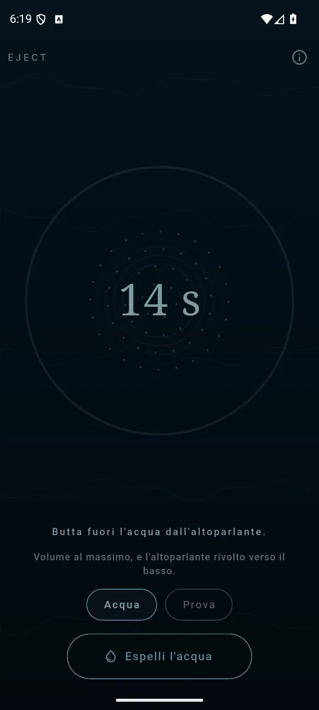
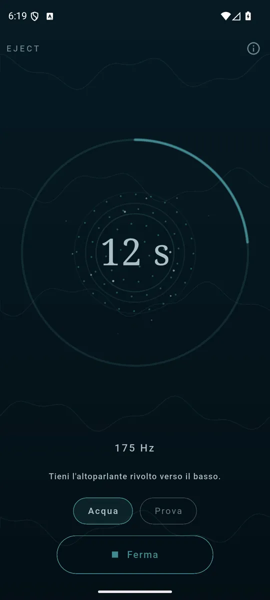
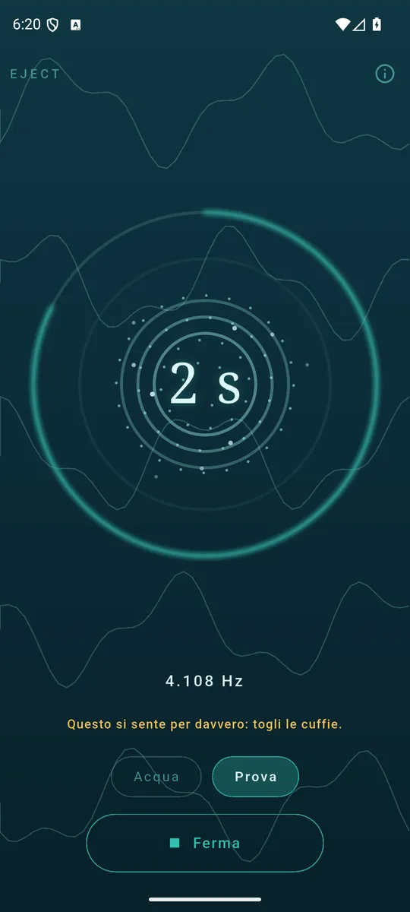

ItalianoEnglish
Il telefono è caduto in acqua, o è finito sotto la pioggia, e adesso il suono esce ovattato: nella griglia dell'altoparlante è rimasta l'acqua. Premi il pulsante e l'app suona quattordici secondi di sweep a bassa frequenza che la spingono oltre il bordo.

Volume al massimo, altoparlante in basso, e premi. 
Le onde sono spaziate dalla frequenza che sta suonando. 
Una salita udibile dice se l’altoparlante è tornato pulito.
Come si usa
- Alza il volume al massimo.
- Tieni il telefono con l'altoparlante rivolto verso il basso.
- Premi il pulsante e aspetta la fine del conto alla rovescia.
- Se il suono è ancora ovattato, ripeti.
Perché quel suono e non un altro
Lo sweep sta fra 100 e 230 Hz: è la banda in cui la membrana di un altoparlante da telefono si muove di più, e il movimento è l'unica cosa che sposta una goccia. E il tono scende e risale a impulsi invece di restare fermo, perché una nota continua fa assestare l'acqua dov'è: è la variazione che la fa camminare verso il bordo.
Due programmi
- Acqua — lo sweep a bassa frequenza che espelle l'acqua.
- Prova — una salita attraverso la banda udibile, per sentire se l'altoparlante è tornato pulito.
Mentre lavora lo vedi
Lo schermo non è una barra di caricamento: le onde che partono dalla griglia sono spaziate dalla frequenza che sta suonando in quel momento, e le gocce se ne vanno man mano che il programma avanza. Quello che vedi è quello che sta uscendo dall'altoparlante.
Non è una riparazione
Eject non ripara un telefono bagnato e non sostituisce l'asciugatura. Toglie l'acqua rimasta nella griglia dell'altoparlante, che è la causa più comune del suono ovattato dopo un bagno — e si ferma lì, invece di lasciar credere altro.
I tuoi dati restano tuoi
L'app non usa il microfono: fa un suono, non lo ascolta. Niente account, nessun server nostro, nessun file audio nel pacchetto — ogni suono è calcolato mentre esce. L'unico permesso è Internet, e serve agli annunci.
Come si paga
Con un banner ancorato in fondo, e basta: nessun abbonamento, nessun programma tenuto in ostaggio.
Dove trovarla
Non è ancora su Google Play. Quando ci sarà, il collegamento comparirà qui.